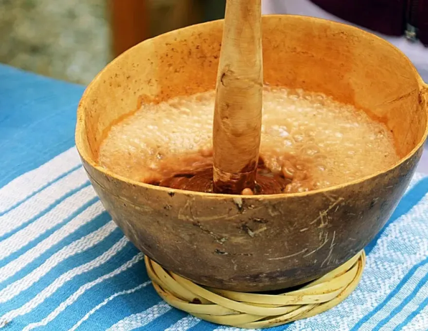

Receta de Pozoncle
Ingredientes
- 1 kg de maíz para pozole
- 500 g de carne de cerdo
- 3 chiles guajillo
- Ajo y sal al gusto
Preparación
Hierve el maíz hasta que reviente. Agrega la carne y los condimentos. Cocina hasta que la carne esté suave. Sirve con lechuga, rábanos y limón.